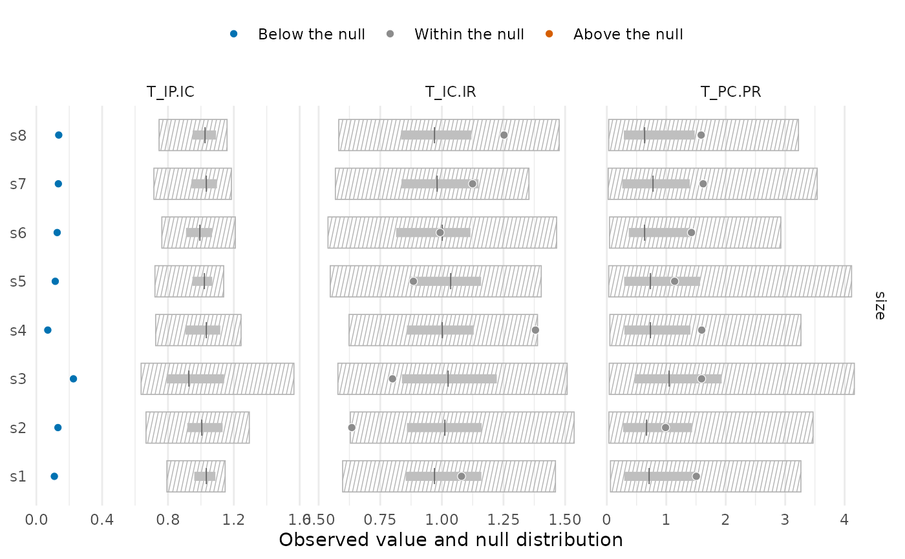
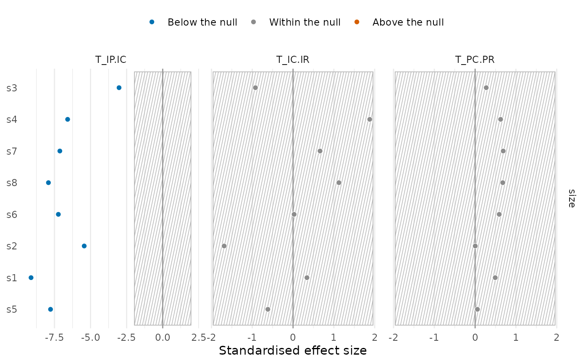
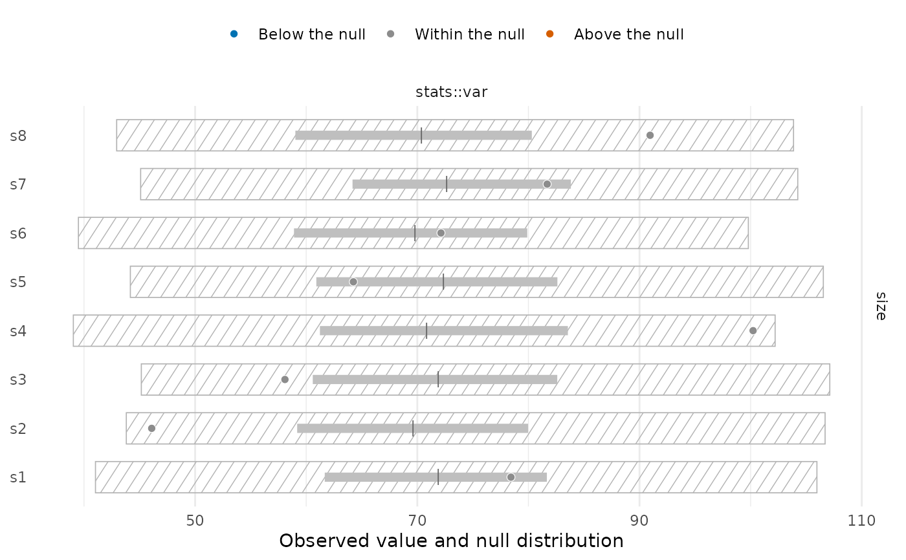

Draws the tests of tstats() or community_index() site by site, in one panel per trait and
statistic. With type = "intervals" (the default) each site is a row with its null
distribution as two nested intervals (thin: level; thick: inner), the null median as a
tick and the observed value as a point coloured by the result of the test: below the null,
above it, or within it. Sites that cannot be tested (such as T_IP.IC at a site with one
species) are drawn as hollow points. With type = "ses" the standardised effect sizes are
drawn instead, with the band of
\(\pm z_{1 - (1 - \mathrm{level})/2}\); sites that
cannot be tested have no standardised effect size and are left empty. The colours still give
the result of the permutation test, which does not assume a normal null distribution. With
hatch = TRUE (the default) the area expected by chance (the outer null interval of each
site, or the band of standardised effect sizes) is hatched.
Usage
# S3 method for class 'tstats'
plot(
x,
type = c("intervals", "ses"),
level = 0.95,
inner = 0.5,
statistics = NULL,
traits = NULL,
sites = NULL,
order = c("data", "ses", "observed"),
colours = c("#0072B2", "grey55", "#D55E00"),
point_size = 2,
interval_width = 2.5,
hatch = TRUE,
hatch_density = 60,
scales = "free_x",
...
)
# S3 method for class 'community_index'
plot(x, ...)Arguments
- x
Result of
tstats()orcommunity_index()withn_perm > 0.- type
"intervals"or"ses".- level, inner
Coverage of the outer and inner null intervals;
1 - levelis also the size of the two-sided test (as intstats_summary()).- statistics, traits, sites
Subsets to draw;
NULL(the default) draws all.- order
Order of the sites within each panel's axis:
"data"(as inx),"ses"(by the mean standardised effect size over the panels drawn) or"observed"(by the mean observed value).- colours
Three colours for sites below the null, within it and above it. The defaults are blue, grey and vermillion of the Okabe-Ito palette.
- point_size, interval_width
Size of the observed points and width of the thick inner interval.
- hatch
Hatch the area expected by chance; with
FALSEit is drawn as a thin line ("intervals") or a grey band ("ses").- hatch_density
Number of hatching lines across the width of a panel.
- scales
Passed to
ggplot2::facet_grid();"free_x"(the default) lets each statistic keep its own range.- ...
Not used.
Details
The plot is built from null_intervals(), and the ggplot object can be changed further with
ggplot2: for instance, + ggplot2::facet_wrap(~ statistic), + ggplot2::theme_bw() or
+ ggplot2::scale_x_log10().
See also
null_intervals(), tstats_summary(), plot.trait_flex().
Other trait variation among individuals:
community_index(),
neighbour_metrics,
nested_variance(),
null_intervals(),
plot.mc_trait_gradient(),
plot.nested_variance(),
plot.trait_flex(),
plot.trait_rarefaction(),
plot_population_traits(),
population_shifts(),
sample_individuals(),
subsample_individuals(),
trait_densities(),
trait_flex(),
trait_gradient(),
trait_gradient_bayes(),
trait_gradient_phylo(),
trait_gradient_test(),
trait_gradient_weights(),
trait_rarefaction(),
tstats(),
tstats_summary()
Examples
set.seed(1)
ind <- data.frame(site = rep(paste0("s", 1:8), each = 20),
species = sample(c("a", "b", "c"), 160, replace = TRUE))
ind$size <- c(a = 10, b = 20, c = 30)[ind$species] + rnorm(160, sd = 3)
res <- tstats(ind, traits = "size", n_perm = 199)
plot(res)

plot(res, type = "ses", order = "ses")

# an index of communities
plot(community_index(ind, stats::var, traits = "size", null = "regional.ind", n_perm = 199))
